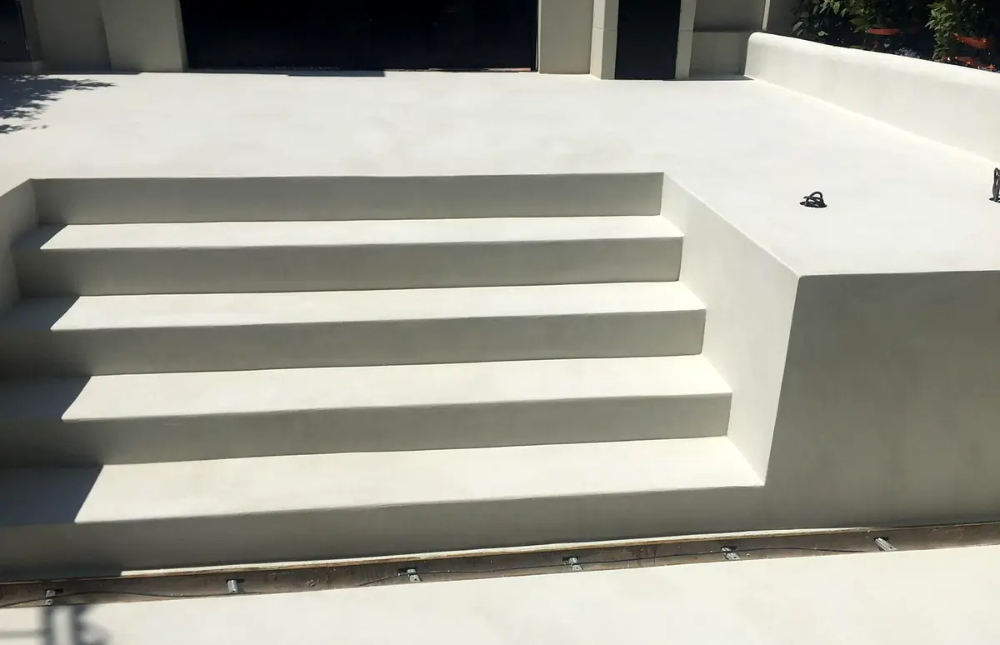

Baño de microcemento con ducha de obra
Suelo, paredes y plato de ducha en un mismo revestimiento continuo, con desagüe lineal y murete de obra.
Leer el casoBCN ProReforma · Pintores desde 1994
Empresa familiar de Cabrils. Preparamos cada superficie a conciencia antes de pintar, estucar o aplicar microcemento.


Suelo, baño y terraza de microcemento. Obras propias.
Pintor desde hace más de treinta años. Valora cada superficie, decide cómo prepararla y está en la obra hasta el último repaso.
Agremiados en el Gremi de Pintors de Barcelona desde 1994.
Conocer la empresaSuelo, paredes y plato de ducha en un mismo revestimiento continuo, con desagüe lineal y murete de obra.
Leer el caso
Pilar y muro con el revoque desprendido. Reparación del soporte y fachada pintada de nuevo.

Marcos y vigas agrisados por el sol. Lijado y barniz para recuperar la madera.

Suelos, muebles, carpinterías y enchufes cubiertos antes de abrir un bote.
Grietas, desconchados y golpes saneados. La pintura no tapa un soporte en mal estado.
Una capa que fija y unifica la superficie para que el acabado agarre y quede uniforme.
Las manos necesarias, cortes limpios y la casa recogida al terminar.

Por el formulario o por WhatsApp, con fotos si las tienes.
Si hace falta, visitamos la obra para ver el estado de las superficies.
Con preparación, materiales, protección, lo que no incluye y cómo se gestionan los cambios.
Un responsable en la obra y una revisión final contigo antes de terminar.
Reservado para opiniones con procedencia y permiso. No publicamos reseñas que no podamos acreditar.
Saneamos el revoque y pintamos fachadas, muros y rejas.
Ver un casoEscaleras, zonas comunes y garajes, con su señalización.
Ver un casoCoordinamos la obra completa y nos ocupamos de los acabados.
Solicitar presupuestoBuscamos la filtración, la reparamos y dejamos la pared lista para pintar.
Solicitar presupuestoSí. Juntamos los muebles en el centro y los cubrimos con plástico; el suelo se protege con papel grueso o lona según el material. Al terminar retiramos todo y limpiamos.
El presupuesto firmado es el precio. Solo cambia si nos pides algo nuevo o si aparece un daño oculto: en ese caso te lo enseñamos con fotos y un presupuesto aparte antes de tocar nada.
Como orientación, entre 1.800 y 3.200 €, según el estado de las paredes y la pintura elegida. Si hay gotelé que alisar, sube. El precio exacto lo da el presupuesto.
Puedes enviarnos fotos y medidas aproximadas por WhatsApp para una primera orientación. Para cerrar un precio necesitamos ver la obra.
Un 30 % a la firma, para materiales y reserva de fechas. El resto, durante la obra o al terminar, según su tamaño.
De lunes a viernes de 8:00 a 19:00 y sábados de 9:00 a 14:00. En locales podemos adaptarnos a otros horarios.
En el Maresme y Barcelona, en un radio de unos 40 km desde Cabrils. Si no tienes claro si llegamos a tu municipio, pregúntanos.
Sí: baños, cocinas, humedades y reparaciones. Nuestra especialidad son la pintura, los estucos y el microcemento.